Perspective, a lovely hand to hold - Autonomy
LPReleased: July 21st, 2017
20 Test Pressings
50 Black
200 Grimace Purple
Track Listing:
1. Comeuppance
2. Lost Opportunities
3. Moshtown, U.S.A.
4. Andrew's Pontiac
5. More Weight
6. 2003
7. Beginner's Luck
8. Upstream
9. Plymouth
10. Good Mourning
BR020
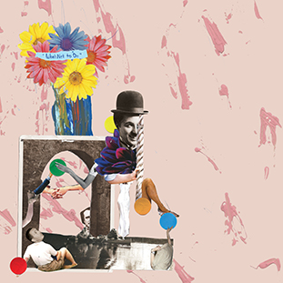
Perspective, a lovely hand to hold - What Not To Do
LPReleased: July 21st, 2017
20 Test Pressings
50 Black
200 Translucent Yellow
Track Listing:
1. Intro
2. Therapy
3. Telephone
4. Thick as Thieves
5. Expressions
6. 201
7. Kris
8. Cashmere
9. East Pearl
BR019
sports. - We'll Get to it Eventually + Other Rarities
LPReleased: August 5th, 2016
20 Test Pressings
105 Black
420 Sea Blue + Grey Color-In-Color
Track Listing:
1. Dogs
2. Classic 2s
3. Illinoisy
4. Sink-O
5. On Grass, On Grass
6. Mo Vaughn (He Was a Baseball-Man)
7. I Am Bob Ross
8. I-90 W
9. Mo Vaughn (He Was a Baseball-Man) (Acoustic)
10. Ridge Road (Acoustic)
11. On Grass, On Grass (Demo)
BR018
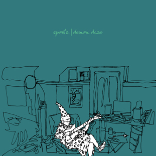
sports. - demon daze
12"Released: January 8th, 2016
1st Press
20 Test Pressings
100 Alternative Cover
165 Black
2nd Press:
500 Clear w/ Black and Green Splatter
Track Listing:
1. I Love To Be Chill
2. Matt Damon
3. Words That Rhyme With Different, Etc.
4. I Am The Boy
5. Ridge Road
6. Spooky Damon
7. Steven Believin'
8. Good Will Haunting
9. Rick's Licks (A Harsh Tale)
10. Police // You're Outta Here
BR017
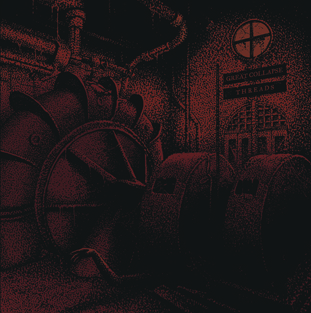
Great Collapse/Threads - Split
7"Released: January 29th, 2016
20 Test Pressings
110 Black
430 Half Black/Half Blood Red
Track Listing:
Side A: Great Collapse
1. Criminal Class
2. Identity
Side B: Threads
1. Exposed
2. Left Empty
3. Deconstruct Yourself
BR016
Great Collapse - Elemental EP
12"Released: October 23rd, 2015
20 Test Pressings
110 Black w/ White Silk Screen B-Side
440 White w/ Black Silk Screen B-Side
Track Listing:
1. Blood, Bread & Roses
2. Civic Disassociation
3. Protection
4. Breathe
5. Quarantine
6. Sweet Paranoia
BR015
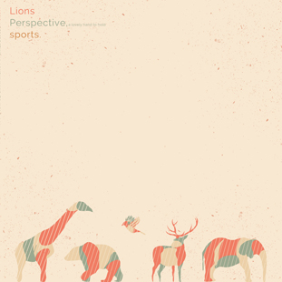
Lions/Perspective, a lovely hand to hold/sports. - 3-Way Split
12"Released: March 18th, 2016
25 Test Pressings
100 Black w/ White Silk Screen B-Side
200 Beer w/ White Silk Screen B-Side
200 Electric Blue w/ White Silk Screen B-Side
Track Listing:
1. Lions - Frankie "the Enforcer" Stecchino
2. Lions - Joseph "the Rat" Epstein
3. Perspective, a lovely hand to hold - The Crevice
4. Perspective, a lovely hand to hold - Bad Larry
5. sports. - Ranch
6. sports. - Cool Ranch
BR014

Perspective, a lovely hand to hold - Play Pretend
7"Released: May 19th 2015
20 Test Pressings
100 Black
200 Highlighter Yellow
200 Sea Blue w/ Mustard Splatter Vinyl
Track Listing:
1. Pepe Silvia
2. Midway
3. I Get Really Dizzy Sometimes
4. Piano Man Abridged
BR013

Threads - All I've Ever Known
LPReleased: April 21st 2015
20 Test Pressings
50 Silk Screen Covers (No Silk Screen on B-Side)
100 Black
350 Orange
Track Listing:
1. Fall Apart
2. Still Searching
3. Good Luck
4. Cutting Corners
5. Go Figure
6. Man Enough
7. Always Wrong
8. Keep Running
9. Never Enough
10. Slip Away
11. Your Voice
12. From Nothing
BR012
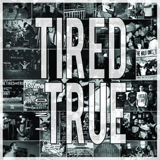
The Tired And True - Live
Cassette TapeReleased: May 27th, 2014
15 Test Tapes
35 Black and Metallic Silver Translucent Mix
65 Black and Grey Opaque Mix
Track Listing:
Side A:
1. Clockwatcher
2. Love Bites
3. Art Fuck City
4. Coffee
5. Maps And Terminals
Side B:
6. At Nature's Mercy (Hot Rod Circuit)
7. Absolute Worst
8. Old Crow
9. Somebody Else
10. Haunts
BR011
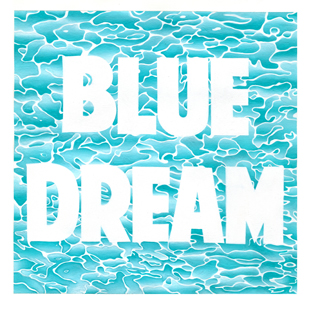
Turnover - Blue Dream EP
7"Released: August 26th, 2014
20 Test Pressings
75 Silk Screen Covers
200 Black
500 Baby Pink/Baby Blue A-Side/B-Side
725 Half Magenta/Half Aqua Blue with Black Splatter (175 of these have a Tour Exclusive Silk Screen Cover)
Track Listing:
Side A:
1. Disintegration
Side B:
2. Read My Mind
3. Bella Donna
BR010
Ivy League, TX/Turnover/Maker/Such Gold - Split
7"Released: March 4th, 2014
1st Press
30 Test Pressings
100 Silk Screened Covers
200 Black
500 Bone/Black/Clear Tri-Color
700 Green "Sour Diesel Haze"
2nd Press
300 Candy Corn Vinyl (White/Orange/Yellow Tri-stripe)
700 White/Grey A-Side/B-Side
Track Listing:
Side A:
01. Ivy League, TX - Cave
02. Turnover - I Would Hate You If I Could
Side B:
01. Maker - Here She Comes
02. Such Gold - Framed
BR009
The Weeds - Roots/Routes
10"Released: June 18th, 2013
20 Test Pressings
50 Silk Screened Covers
50 Black
155 Translucent Beer/Bronze A-side with Translucent and Opaque Red Splatter B-side Vinyl
Track Listing:
01. Sunset Eyes (Beautiful Life)
02. Attention
03. Death Valley
04. Feel Nothing
05. Up To Speed / Your Life
06. Stranger Than Fiction
BR008
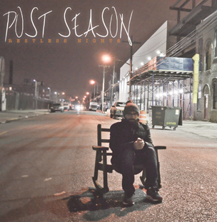
Post Season - Restless Nights
7"Released: May 14th, 2013
20 Test Pressings
50 Silk Screened Covers
105 Black
340 Egg (White w/ Yellow Splatter) Vinyl
Track Listing:
01. Accidental Damage From Handling
02. Ducks Fly Together
03. To Infinity And Beyond
BR007
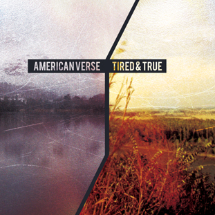
American Verse/The Tired and True - Split
7"Released: March 26th, 2013
20 Test Pressings
50 Silk Screened Covers
100 Black
175 Half Oxblood Red / Half Beer w/ Black Splatter
175 Half Opaque Grey / Half Coke Bottle Clear w/ Baby Blue Splatter
Track Listing:
Side A: American Verse
01. Sleepless Nights, Restless Days
02. These Hours
Side B: The Tired and True
01. Clockwatcher
02. Somebody Else
BR006
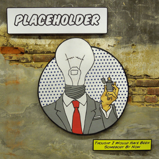
Placeholder - Thought I Would Have Been Somebody By Now
7"Released: October 16th, 2012
20 Test Pressings
50 Silk Screened Covers
105 Black
350 Translucent Yellow w/ Black Splatter
Track Listing:
01. Mary
02. Tired Of Me
03. Calculation
04. Bright Enough To Shine
BR005
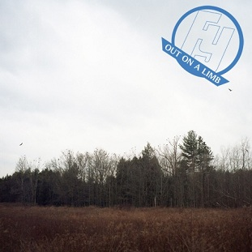
Forever Young - Out On A Limb
Cassette TapeReleased: October 2nd, 2012
10 Test Tapes
35 Black
65 Blue
Track Listing:
01. Empty
02. Floor Space
03. Weight Games
04. Better Days
05. Out On A Limb
06. Clear The Coast
07. Restless Mind
07. Nora
09. Torch Runner
10. Over This
BR004
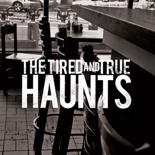
The Tired and True - Haunts
7"Released: January 31st, 2012
20 Test Pressings
50 Silk Screened Covers
100 Black
365 Half Black / Half Grey
Track Listing:
01. Absolute Worst
02. Old Crow
03. Love Bites
04. Haunts
BR003
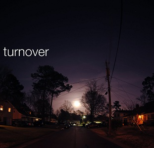
Turnover
7"/CDReleased: June 21st, 2011
1st Press:
20 Test Pressings
25 Silk Screened Covers
119 Black
210 Translucent Purple
2nd Press:
30 Evil Dead Covers
350 Sky Blue
350 White
3rd Press:
30 The Shining Covers
420 Clear w/ Blue and Orange Splatter
600 Olive, Mustard and Black Tricolor
4th Press:
315 Half Sky Blue / Half White
730 Clear w/ Purple and Black Splatter
Track Listing:
01. Sasha
02. Solitude
03. Time
04. Sleepless Nights
05. Waiting
BR002
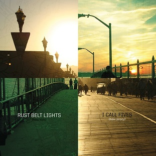
I Call Fives/Rust Belt Lights - Split
7"Released: April 5th, 2011
20 Test Pressings
75 - Silk Screen Covers
125 - Black
400 - Half Green / Half Black
400 - Half Tan / Half Clear
Track Listing:
Side A: I Call Fives
01. Too Much To Lose
02. For The Best
Side B: Rust Belt Lights
01. With No Hesitation
02. Haters Get Hated
BR001
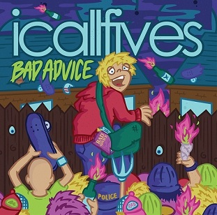
I Call Fives - Bad Advice
LPReleased: August 3rd, 2010
20 Test Pressings
50 Record Release Covers - Blue
50 Green
150 Purple
250 Blue
Track Listing:
01. Hand Me Down Luck
02. Elevator Music
03. Try Hard To Remember
04. Easy To Say States Away
05. Two Days Or A Lifetime Of Failure
06. Take The Fall
07. Everyone Knows